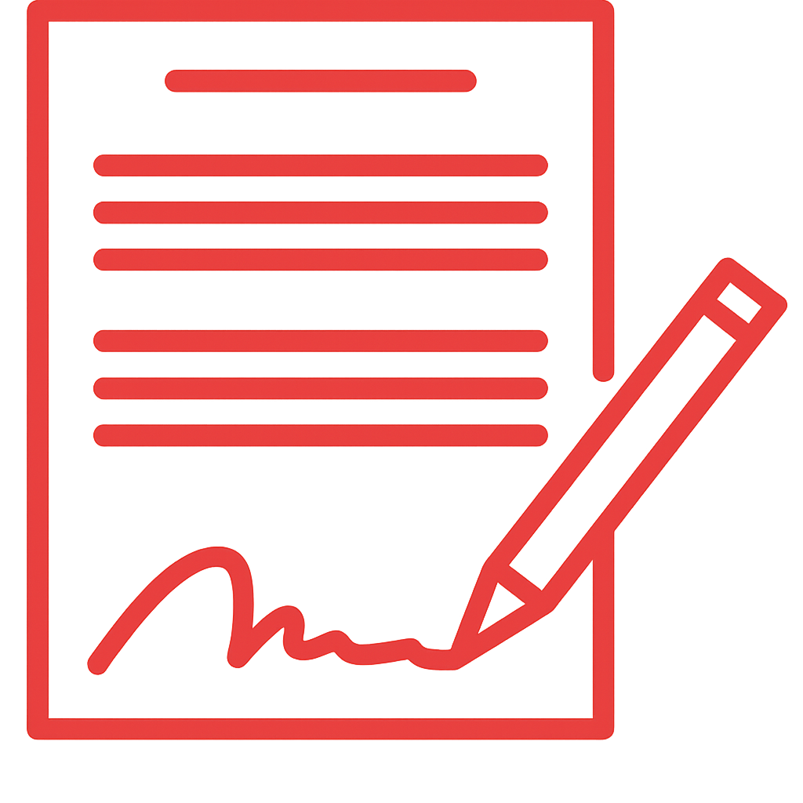
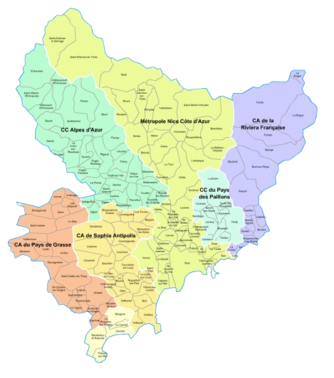

Cordiste 06
Travaux sur Corde
06 Alpes-Maritimes
NOS SERVICES

Offrez à vos façades une visibilité parfaite grâce au nettoyage de vitres en hauteur. Cette intervention permet d’éliminer salissures et traces, même sur les surfaces les plus inaccessibles. Nos cordistes interviennent rapidement pour un résultat impeccable en toute sécurité.
CONTACTEZ - NOUS
Redonnez vie à vos façades grâce à nos prestations de peinture en hauteur. Nous vous accompagnons pour la mise en peinture, la rénovation ou l’entretien de surfaces difficiles d’accès, que ce soit en milieu résidentiel, tertiaire ou industriel.
CONTACTEZ - NOUS
Sécurisez vos toitures avec nos systèmes de lignes de vie installés dans les règles de l’art. Nos prestations incluent l’étude du site, la pose des ancrages, l’installation complète de la ligne de vie et la vérification de conformité, le tout dans le respect strict des normes de sécurité.
CONTACTEZ - NOUS
Installation de ligne de vie : De l’étude du site à l’ancrage final, notre équipe prend en charge l’intégralité de la pose de ligne de vie sur toiture. Cordiste 06 vous garantit une installation conforme aux normes en vigueur dans les Alpes-Maritimes, pour une sécurité optimale lors de vos interventions en hauteur.
Nettoyage de vitres en hauteur : Offrez à vos vitrages une propreté irréprochable, même dans les zones les plus difficiles d’accès. Nos cordistes interviennent dans tout le département des Alpes-Maritimes pour un résultat impeccable, rapide et sécurisé.
Peinture en hauteur : Rafraîchissez vos façades inaccessibles grâce à notre équipe de cordistes spécialisés. Cordiste 06 réalise tous travaux de peinture en hauteur, aussi bien pour les particuliers que pour les bâtiments professionnels, sans besoin d’échafaudage.
UNE ÉQUIPE DE CORDISTES EXPÉRIMENTÉS ET UN MATÉRIEL HAUTEMENT SPÉCIALISÉ
Notre société de cordistes s'appuie sur une équipe formée aux travaux en hauteur et équipée de matériel professionnel de dernière génération. Nous intervenons sur tous types de bâtiments, même les plus difficiles d’accès, pour des prestations telles que le nettoyage de vitres en hauteur, le lavage de façades, la peinture en extérieur, ou encore la sécurisation de toitures et l’installation de lignes de vie. Grâce à notre savoir-faire technique et à notre parfaite maîtrise des accès par corde, nous garantissons des interventions rapides, sécurisées et conformes aux normes en vigueur.
DES TARIFS
ADAPTÉS À VOS BESOINS
Nos prestations de travaux en hauteur sont conçues pour offrir un excellent rapport qualité-prix. Que ce soit pour du nettoyage, de la peinture ou des interventions de sécurisation, nous vous garantissons des services professionnels à des tarifs compétitifs. Demandez dès maintenant votre devis gratuit et bénéficiez d’une offre claire, rapide et sans engagement.
DEVIS GRATUITPOURQUOI CHOISIR Quali-corde sud DANS LES ALPES-MARITIMES ?
En faisant appel à Cordiste 06, vous profitez du savoir-faire d’une équipe passionnée, sérieuse et réactive. Reconnus dans tout le département pour notre expertise en travaux en hauteur, nous assurons chaque intervention avec professionnalisme, qu’il s’agisse de nettoyage de façades, de peinture en hauteur, d’entretien de vitres ou de sécurisation de toitures. De l’étude du chantier jusqu’à la finition, nous vous accompagnons avec rigueur et transparence à chaque étape.
DES CONTRATS SUR MESURE POUR UNE TRANQUILLITÉ DURABLE
INTERVENTIONS PONCTUELLES
ENTRETIEN PROGRAMMÉ
Nos contrats personnalisés sont pensés pour vous offrir une tranquillité totale et une parfaite maîtrise de vos besoins. Avec Cordiste 06, chaque prestation fait l’objet d’un engagement clair sur les tarifs, les délais et la qualité. Que ce soit pour une intervention ponctuelle (nettoyage de façade, peinture, mise en sécurité) ou pour un entretien régulier de vos structures en hauteur, nous proposons des formules flexibles, fiables et adaptées à vos contraintes.
NOTRE ZONE D’INTERVENTION DANS LES ALPES-MARITIMES

Cordiste 06 intervient dans tout le département des Alpes-Maritimes, ainsi que dans
les villes voisines. Que ce soit pour une intervention urgente ou sur rendez-vous, notre équipe de
cordistes se déplace rapidement pour vos travaux en hauteur (nettoyage, peinture, sécurisation,
etc.).
Contactez-nous au 07 81 22 68 25 ou
via notre formulaire pour obtenir un devis gratuit.
Nous intervenons notamment à :
Aspremont –
Beaulieu-sur-Mer –
Cap-d’Ail –
Cagnes-sur-Mer –
Carros –
Colomars –
Drap –
Èze –
Falicon –
Gattières –
La Gaude –
La Trinité –
Levens –
Nice –
Roquebrune-Cap-Martin –
Saint-André-de-la-Roche –
Saint-Jeannet –
Saint-Laurent-du-Var –
Tourrette-Levens –
Vence –
Villefranche-sur-Mer
VOTRE PARTENAIRE DE CONFIANCE POUR LES TRAVAUX EN HAUTEUR
Cordiste 06, spécialiste reconnu dans les Alpes-Maritimes, intervient pour tous types de travaux en hauteur, que ce soit en urgence ou sur rendez-vous. Nous accompagnons aussi bien les particuliers que les professionnels, avec des prestations claires, encadrées par des contrats transparents, sans mauvaise surprise.
Nous intervenons sur les zones difficiles d’accès pour des travaux de nettoyage de vitres, de façades, de peinture extérieure ou encore de sécurisation de toitures et pose de lignes de vie. Nos équipes utilisent des techniques d’accès par corde pour intervenir là où les nacelles ne peuvent pas aller.
Disponible 7j/7, 24h/24, y compris les jours fériés, Cordiste 06 vous garantit des interventions rapides, sécurisées et conformes aux normes. Nous assurons aussi bien les interventions ponctuelles que les contrats d’entretien régulier sur vos bâtiments.